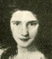

Alison Booth
Thormanby. [i.e. Wilmott Willmott-Dixon]. Queens of Beauty and Their Romances. 2 vols., London: Hutchinson; New York: Appleton, 1907.
TOC: Volume I; A Puritan Wife (Mrs. Lucy Hutchinson); A Fair Woman with Discretion (La Belle Hamilton); From the Castle to the Convent; Rival State Queens (Mrs. Bracegirdle; Nancy Oldfield); A Saint In Society; La Belle Dame Sans Merci (Lady Mary Pierrepoint); Maids of Honour (Mary Bellenden; Molly Lepel); “The Goddesses” (Maria Gunning); A Victim of Indiscretion (Lady Charlotte Bury); A Crown Well Lost (Lady Sarah Lennox); A Political Siren; The “Twin Wives” (Agnes Berry; Mary Berry); Volume II; The Romance of Two Royal Duchesses (The Duchess of Cumberland; Maria, Countess of Waldegrave); “The Wild Irish Girl” (Lady Morgan; Lady Clarke); “The Nightingales of Bath” (Mrs. Sheridan and Mrs. Tickell); “The Three Graces” (Mrs. Sheridan [Elizabeth Linley i.e. not same as above]; Helen, Marchioness of Dufferin; Mrs. Norton); The Heiresses of Rose Hill (Countess of Charlemont [Anne Bermingham, in database as Anne Caulfeild, Lady Charlemont]); The Queen of Almack’s (The Countess of Jersey [Sarah Sophia Child Fane]).
W. Willmott Dixon on titlepage.
-
Elizabeth, Duchess of Hamilton
-
Duchess of Cumberland
-
Lady Morgan
-
Lady Clarke
-
Mrs. Sheridan and Mrs. Tickell
-
Mrs. Sheridan
-
Mrs. Sheridan
-
Countess of Charlemont
-
Countess of Jersey
Search OCLC WorldCat for this title.
Search Google Books for this title.